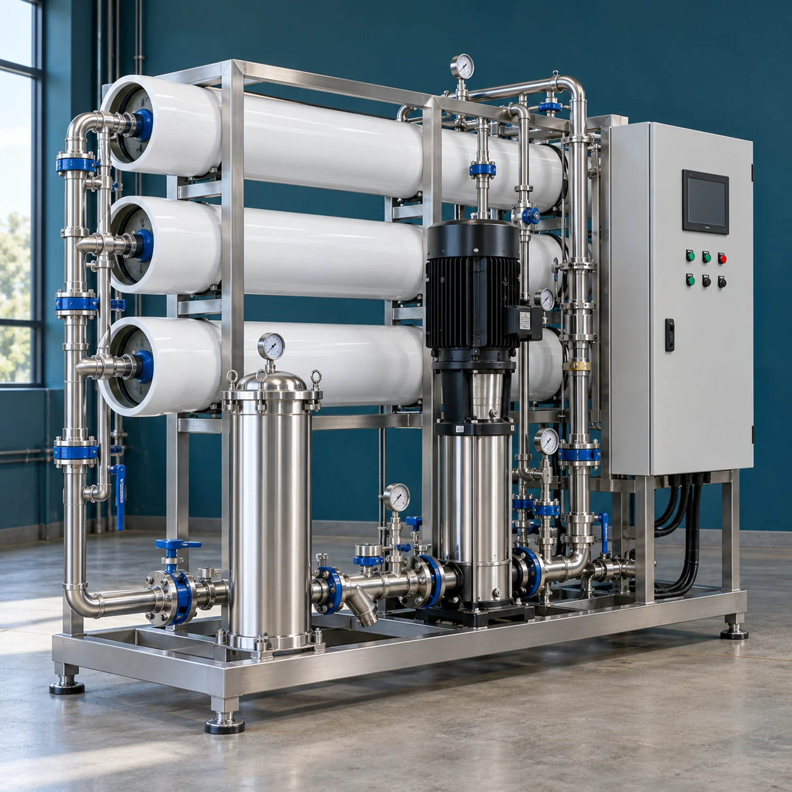

01Source assessment
Source water
Start by understanding the waterSource-water testing helps determine which treatment stages are needed. Water that looks clear can still contain dissolved substances.
Follow NeutrapH’s proposed treatment journey, discover what each filter does, and see how reverse osmosis separates water from many dissolved substances.
Water purification · Planned treatment, pending verification

Follow the proposed journey through the treatment equipment and see where the RO permeate and concentrate streams separate. Select any stage to discover its role.
Source-water testing determines the treatment needed.
Educational simulation of the proposed process, not installed equipment or verified performance. Colours are illustrative: clear-looking water is not proof of safety. On smaller screens, swipe across the diagram. Detailed explanations follow below.
This is NeutrapH’s proposed treatment journey. Each stage has a different role; the final configuration and its performance must be confirmed before supply begins.
Source-water testing helps determine which treatment stages are needed. Water that looks clear can still contain dissolved substances.
A sediment filter retains particles such as sand and rust. It helps protect the equipment further along the line.
Suitable carbon media can reduce chlorine and certain taste- and odour-causing substances. The proposed carbon stages and replacement schedule still need confirmation.
A pump supplies pressure. Some water crosses a semi-permeable membrane; the remaining flow carries a higher concentration of rejected substances away.
↳ Concentrate leaves here, separately from the treated-water stream.
The proposed tank stores RO-treated water. Tank cleaning, sealed connections and hygienic handling are important to prevent recontamination.
Properly designed UV treatment inactivates microorganisms. It needs suitable water clarity, UV dose and maintenance; it does not remove dissolved salts.
Simplified proposed sequence. Carbon stages are grouped for clarity. Final treatment design, any additional conditioning and concentrate management depend on source-water assessment.
Reverse osmosis (RO) uses pressure to push water through a semi-permeable membrane. The membrane allows water through while reducing many dissolved salts and other substances.
In natural osmosis, water moves across a membrane toward the more concentrated solution. RO applies pressure to drive water in the opposite direction.
Many dissolved salts remain in the concentrate stream. This water leaves separately; it is not the finished drinking-water stream.
It is one part of a treatment system. Pre-treatment, maintenance, hygienic storage and water-quality testing all matter.
No. Appearance cannot tell you everything about dissolved chemicals or microorganisms. Appropriate testing is needed to assess water quality.
RO reduces many dissolved mineral salts. The finished-water composition depends on the source, membrane and system operation. Any conditioning must be considered in the final design.
No. RO produces both permeate and concentrate. Their proportions depend on the design and operating conditions; NeutrapH has not confirmed a recovery rate.
The treatment journey shown here is proposed. Water-test evidence is pending and no finished-water test report is available on this website yet. NeutrapH has not started trading.
Before supply begins, the treatment configuration and operating controls need confirmation, supported by appropriate water-quality evidence.
Ask about planned quality checksLearn more: EPA: how reverse osmosis works · CDC: understanding water treatment. General educational references; not certification of NeutrapH.